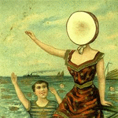
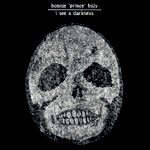
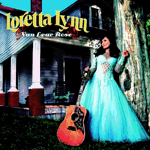

Man, so much good music this year! All this good music coupled with IndieTorrents have led to a banner year of me listening to good music. With all the hype and stuff about BitTorrent and the busts that have occurred as of late, I’ll tell you that A) IndieTorrents deals only with non-RIAA artists, and B) I spend a good deal of money on artists that I like. IndieTorrents has spurred me to buy many more CDs from artists that I would never have heard of. So, stick that in your lawsuit-happy pipe and smoke it, RIAA.
In other news, Pitchfork seems to have really taken off this year. Complete with industry scandal (their balance sheet was apparently leaked to the public), wide-acclaim and their own determined band of detractors. The good news is that people are talking about them, and they remain one of the few bastions of real, no-kid-glove-wearing music journalism. Yeah, sure, they can be real dicks and give an album I really liked a 2.0 out of 10, but that sort of opinionated music review gets me thinking about why I like the music so much. To quote Jack Nicholson’s Joker: “This town needs an enema!“, and Pitchfork has provided as much.
So, without further ado, my top 10-ish albums that I heard for the first time this year (in no particular order):
-

From an earlier post: The circuitous route by which Neutral Milk Hotel caught my ear is really only a small facet of the strange story of Jeff Mangum’s short career with his Neutral Milk Hotel band. In an Aeroplane… was released in 1998 to critical acclaim and then he essentially fell off the face of the earth. Much like the sudden rise subsequent disappearance of the band, both albums (this one and the first “On Avery Island”) are noisy, powerful and ultimately deep and terribly sad. There is part of me that wants to hear more and part of me that revels in the hope that music like that is never made again.
-

I’ve made a couple posts about Interpol in the past, mostly in regards to their breakout “Turn on the Bright Lights” album from 2002. After a long wait in 2003 (and through most of 2004), they released “Antics”. With “Turn on…”, the album grew on me with each listen, eventually becoming one of my favorite albums of 2003 and it still reminds me of the cold, dark winter of 2002/2003. “Antics” hit me in a similar way, but different and better. Interpol doesn’t shy away from their tight, rythmic ways on “Antics”, but do make many growing steps on this album. Whereas once I thought “Turn on…” would be my favorite Interpol album, “Antics” has supplanted it. “Slow Hands” the obvious favorite on the album shines (as much as these black-clad dudes can), and Carlos D.’s bass playing makes me want to shake my ass while Paul Bank’s dark vocals make me want to don black-on-black suits and sit in the corner. It’s like hipster goth music, and I love it.
-


My fandom of Will Oldham (Bonnie “Prince” Billy’s alter-ego) started when I first heard Palace Music’s “Viva Lost Blues” some two years ago. The ragged vocals and broken-down guitar paired with superb lyrics hit a chord with me somehow, and I never stopped listening. Bonnie Mr. Oldham has never been shy about releasing material, and he has a raft of it under various names. So, when I kept hearing about this Bonnie “Prince” Billy album called “Master and Everyone” I had to check it out. The ragged vocals of the Palace Music days were gone, and replaced with smooth (by Oldham standards) vocals and gracious harmonies. Lyrically, he’s as tight (maybe tighter) than ever. “The Way” gets me every time. Also recommended: I See A Darkness, also by the Bonnie “Prince”, and perhaps an even better album that “Master”.
-

If you would have told me January 1, 2004 that I would have selected a Loretta Lynn album in my “Best Music I Heard This Year” list, I would have dismissed you like a fifth grade class on the last day of classes. But leave it to Mr. Jack White of the White Stripes to pull together a young band to back Mrs. Lynn and crank out this awesome record. However, you can’t give Jack all the credit here — Loretta Lynn has never been afraid of controversy or “pushing the envelope,” and suffice it to say that she might be a little cracked in the head. Sometimes the best of them are, and she certainly doesn’t disappoint or go too far out of her boundaries. She still sings songs about Butcher Holler, her mommy and hating on hussies, but with Jack’s raw production and a shitkicking band behind her she sounds way ahead of the country curve. Take a lesson, Nashville.
-
I’ve never, ever listened to a bit of Jay-Z. I’ll freely admit that. I have, however, like the good little white suburban kid that I am/was say that I listened to the Beatles’ White Album quite a bit. At first, I didn’t understand what all the hype was about DJ Danger Mouse’s mixing of the two albums. I had easily dismissed Jay-Z as just another rapper, and thought that this might just be some half-assed attempt at party mixing. Oh, how wrong I was. After a couple of listens, I came to the realization that this rocked, and HARD. Jay-Z’s tight lyrical stylings with the often beat-heavy semi-psychedelia of the White Album mingled nicely and brought new light to both albums. Some folks said it was just fluff, and some said it was the coming of some sort of new style. As per the usual, I can’t fall into either camp there — this isn’t bad enough to consider just fluff, but it’s no White Album by itself. It is, however, a fantastic album that should draw fans of both genres together. It’s just so damned fun and invigorating. Few albums I can turn to regardless of mood or time of day.
-

How to explain Devendra Banhart… I don’t know if it can be done through words alone. He’s got sort of that Eddie-Vedder-in-his-later-years thing going on with a touch of Will-Oldham-country-dirt but with a light and supple touch of Sufjan Stevens on the guitar. I could attempt to put together any number of hipster name-drops to make a reasonable sculpture of Banhart, but the proof is in the listening. He’s nearly 4 years younger than I, but writes and plays like a man twice his age.
-

TV on the Radio blends electronica, tape loops and even a smattering of a capella to make sonorous, infectious rap-inspired rock. Rock might not be the right word here — perhaps jams is the better word. They hit the scene this year with their debut, and if the new single “New Health Rock” is any indication, there are good things coming from TV on the Radio.
-

Ah, The Black Keys. I’ve made a couple posts about these boys from Akron, Ohio. They released “Rubber Factory” this year, after opening up in 2002 with “The Big Come Up”, which indeed was a big come-up for them. I saw them in 2003 opening for Sleater-Kinney promoting their “Thickfreakness” album, which I thought was a lackluster sophomore effort. “Rubber Factory”, however, proved me completely wrong by rocking their asses off. These two guys are students of the real folk blues — having studied by playing with some of the best real blues performers. They even passed up a number of offers to defect from their current label, Fat Possum, to larger, likely more lucrative deals. I’ll agree that Stevie Ray Vaughan might have brought the blues back to the forefront in the 80′s, but people like the The Black Keys keep them alive.
-
I first heard Franz Ferdinand on WOXY some months back with their first quirky single, “Darts of Pleasure”. Later on, it was “Take Me Out”, then “Matinee”, and then “Michael”. While listening to these singles months-apart, I hadn’t quite acquired my taste for Franz Ferdinand. I had had other favorites over the span of my relationship with Franz, but by the time “Matinee” (one of the strongest tracks on an album of strong tracks) rolled around, I realized “Hey — wait a minute. Each of these songs has been equally awesome! Maybe the whole album is like this!” Purchased at ear X-tacy sometime during the fall, it was true. Franz Ferdinand, this band which I had a mere monthly fancy with had come home to roost at last. They throw down the new-wave tinged hook-laden rock like no other Scots I know. Expect good things.
-

By all accounts, Sufjan Stevens should have been on this list last year, if I had listened to Jackson last year about Greetings From Michigan. Sufjan Stevens is a unique and productive talent in the US indie scene — a gifted musician and songwriter who changes his style up a bit on each of his albums. Greetings from Michigan is his epic love-song to the state of Michigan, and Seven Swans is a decidedly different record with a definite spiritual core. It’s hard to say which I like more, I guess it depends on my mood. Greetings has “Detroit, Lift Up Your Weary Head! (Rebuild! Restore! Reconsider!)”, a callout to the crumbling crown city of Michigan, which is both interesting in subject and in song. Seven Swans has “The Dress Looks Nice on You”, which reminds me of Kelly so much — not only because of the lyrics, but because of the Casio-style breakdown later in the song. Both albums I first listened to this year, so they get my double-vote. Further: Sufjan’s annual Christmas albums are fantastic turns on holiday standards.
File Under: How Did I Miss These?
- Mos Def – Black on Both Sides
- Elvis Costello – My Aim Is True
- Kentucky Moutain Music Collection (7 disc set)
File Under: It was good, but c’mon people
- The Arcade Fire – Funeral
Pitchfork appears to be to blame for the explosion of this album. It gets a 9.7 rating and everyone is hopping up and down excited like the Pixies got back together (they did, and people did hop up and down). I’ve got this album, I’ve listened to it, and I do like it quite a bit, but not to the point that every indie hipster has put it on the top of their list! I refuse to slag the album, because it’s certainly not slag-worthy, but what the hell people.
File Under: Bemused Adoration
-
Brian Wilson – SMiLE
Pet Sounds is easily in my top ten of all time. SMiLE is Brian Wilson’s long, long, long awaited release of the long, long, long awaited and long-shelved Beach Boys album. I listened to it, and it is a masterful work, but not something that I felt deserved the heaps and heaps of rave reviews heaped upon it. I love the guy just as much as the next Beach Boys fan, but he didn’t shit gold folks. The album is playful, introspective, truly independent and a really interesting listen, though. It’s worth finding out.
File Under: Haters Ball
-
The Darkness – Permission to Land
This album is so ridiculous, it is awesome. If David Bowie had grown up in the eighties, you know this is what Ziggy Stardust would have ended up like. It’s over-the-top, profanity-laced (get your hands offa my woman, mother-chicken!), and pulls out 80s heavy-metal tricks like so many rabbits from so many hats. It’s my filthy music indulgence of the year, and I’m not ashamed to admit it. So why all the hate, haters? Can you not handle it? Is the rock too much? It is awesome and deep down inside, you know it.
In Summation…
So, what did I learn this year? Well, you can mix up catchy bass-heavy new-wavy riffage with emo-style navel-gazing lyrics and turn out a great record (Interpol, and to a lesser extent Franz Ferdinand). Also, there is nothing wrong with indie-rock singer-songwriters with a little old-timey flair (Bonnie “Prince” Billy, Sufjan Stevens, Devendra Banhart). There is a lot of rap that I haven’t listened to, but should (Jay-Z, De La Soul, Mos Def, etc.), and some that might be in decline if you believe what you read (Beastie Boys). There are many things I learned this year in music, but as per the usual, I learned that a little music leg-work is well worth it in the end.
After 2003′s nearly-non-stop White Stripes love-fest, I felt this year turned it down a notch in regards to my listening habits. Maybe it’s been happening for the last couple of years, but maybe it’s just a sign of the times. My younger musical haunts of Nirvana and Rage Against the Machine have given way to softer, perhaps more sophisticated things such Sufjan Stevens and Will Oldham. This year brought more old-timey music to my ears, and made me reconsider my stance on religiously-inspired music. There is still a lot of shitty religious music, but some of it — the more naked the better — is real gold. Is it me? Is it the world? I’ve still got a taste for the rock, no doubt (Neutral Milk Hotel, Sonic Youth), but things that used to suit me don’t suit as well any more. My tastes continue to change, and I look forward to more music in the new-year.
By the way, my previous “music years in review”, can be found here (sorta), here and here.